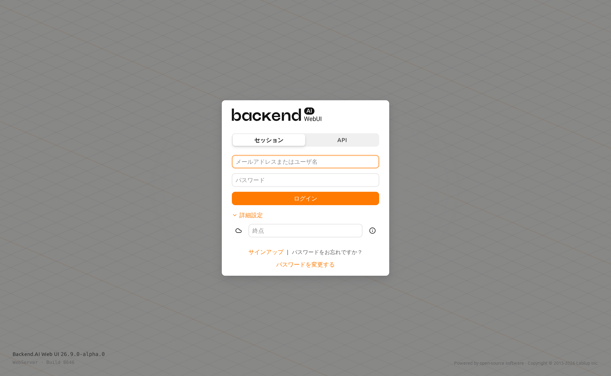
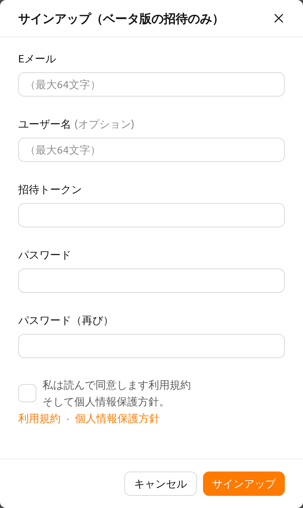
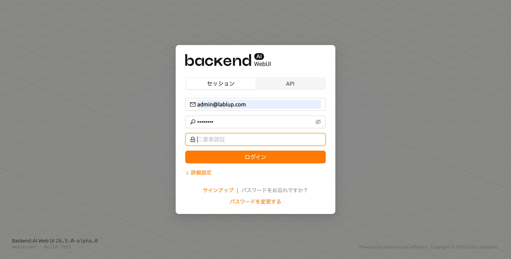
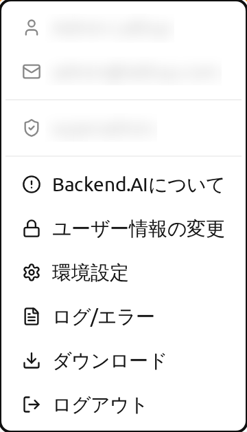
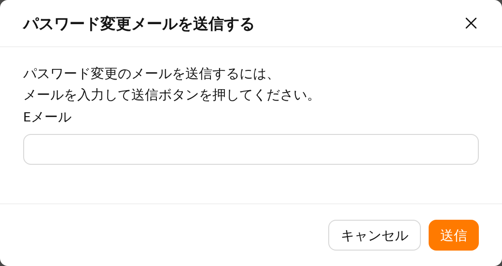
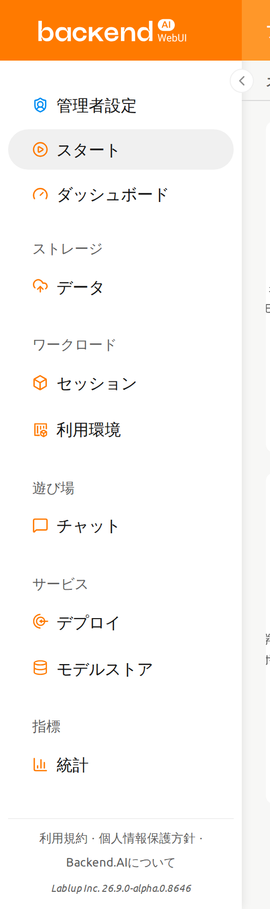
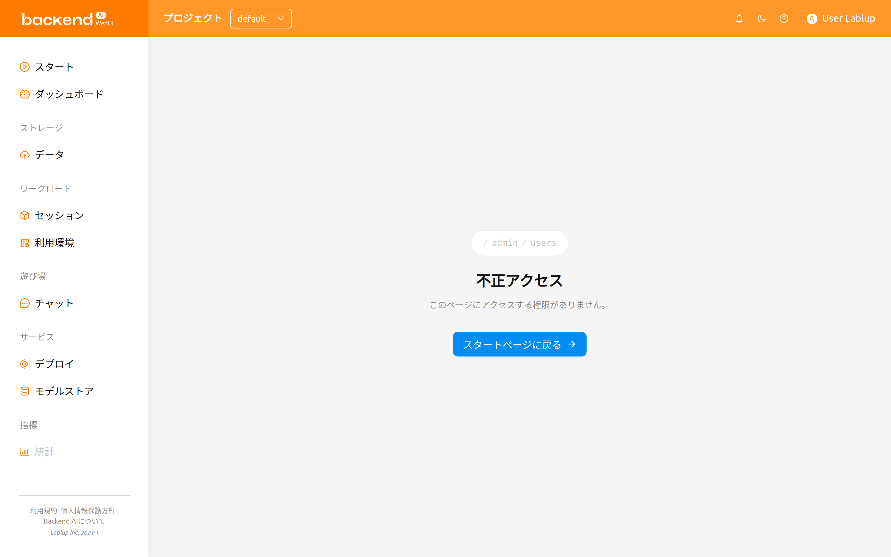

サインアップとログイン#
サインアップ#
WebUIを起動すると、ログインダイアログが表示されます。まだサインアップしていない場合は、ダイアログの下部にあるサインアップリンクをクリックしてください。

必要な情報を入力し、利用規約/プライバシーポリシーを読み同意した上で、サインアップボタンをクリックしてください。システム設定によっては、サインアップに招待トークンを入力する必要がある場合があります。メールアドレスが本人のものであることを確認するための確認メールが送信されることがあります。確認メールが送信された場合は、メールを読んでリンクをクリックし、検証を通過してからアカウントでログインする必要があります。

サーバーの構成およびプラグインの設定によっては、匿名ユーザーによるサインアップが許可されていない場合があります。その場合は、システムの管理者に連絡してください。
悪意のあるユーザーがパスワードを推測するのを防ぐために、パスワードは8文字以上で、少なくとも1つのアルファベット、数字、特殊文字を含む必要があります。
ログイン#
メールアドレス（またはユーザー名）とパスワードを入力し、ログインボタンをクリックします。
ログイン画面では、ログインダイアログの背後にアニメーションする「ダイアゴナルウィーブ」背景パターンが表示されます。オペレーティングシステムでモーションを減らす設定が有効になっている場合、このアニメーションは自動的に無効になります。アプリケーションのバージョンおよびビルド情報は画面左下に、著作権情報は画面右下に表示されます。ログインダイアログが開くと、最初のフィールドに自動的にフォーカスが当たります。セッションモードではメールアドレス/ユーザー名フィールド、APIモードではAPI Keyフィールドです。
接続モード#
管理者が有効にしている場合、ログインダイアログの上部にセッションモードとAPIモードを選択できるモードセレクターが表示されます。
- セッション: 標準的なログインモードです。メールアドレス/ユーザー名とパスワードを入力して認証します。ほとんどのユーザーにとってデフォルトのモードです。
- API: APIキーペアを使用してログインします。メールアドレスとパスワードの代わりにAPI KeyとSecret Keyを入力します。プログラムからのアクセスに便利です。
APIエンドポイント#
詳細設定リンクをクリックすると、エンドポイント設定セクションが展開されます。APIエンドポイントフィールドに、リクエストをManagerに中継するBackend.AI WebserverのURLを入力します。
Webサーバーのインストールおよびセットアップ環境によっては、エンドポイントが固定されており、設定ができない場合があります。
Backend.AIは、ユーザーのパスワードを一方向ハッシュを通じて安全に保持します。BSDのデフォルトパスワードハッシュであるBCryptが使用されるため、サーバーの管理者でもユーザーのパスワードを知ることはできません。
SSOログイン (SAML / OpenID)#
管理者がSSO（シングルサインオン）を設定している場合、標準のログインボタンの下に追加のログインボタンが表示されることがあります。
- SAMLログイン: 組織のSAML IDプロバイダーを使用して認証します。
- [Realm名]ログイン: OpenID Connectプロバイダーを使用して認証します。ボタンのラベルには管理者が設定したrealm名が表示されます。
該当するSSOボタンをクリックすると、組織のIDプロバイダーにリダイレクトされ、認証が行われます。
SSOログインオプションは、システム管理者が有効にした場合のみ表示されます。
OTPログイン (二要素認証)#
アカウントで二要素認証(2FA)が有効になっている場合、メールアドレスとパスワードを入力した後にOTP（ワンタイムパスワード）フィールドが追加で表示されます。

認証アプリケーション（Google Authenticator、1Password、Bitwardenなど）を開き、OTPフィールドに6桁のコードを入力するとログインが完了します。
初回ログイン時のTOTP設定#
管理者が二要素認証を必須に設定しており、まだTOTPを設定していない場合、初回ログイン成功後に自動的に設定ダイアログが表示されます。認証アプリケーションでQRコードをスキャンするか、提供されたキーを手動で入力し、6桁の認証コードを入力すると設定が完了します。
TOTP設定後は、毎回のログイン時にOTPコードの入力が必要になります。
アカウント設定での2FAの有効化・無効化の詳細については、トップバー機能の2FA設定セクションを参照してください。
同時セッションの検出#
別のブラウザやデバイスで既にログインしている状態でログインを試みると、既存のセッションがアクティブであることを通知する確認ダイアログが表示されます。既存のセッションを終了して新しいログインを続行するか、キャンセルして既存のセッションを維持するかを選択できます。
この機能は、アカウントへの意図しない同時アクセスを防止します。このダイアログが予期せず表示された場合は、他の誰かが資格情報を使用している可能性があります。その場合はログインを続行して他のセッションを終了し、パスワードの変更を検討してください。
ログイン後、スタートページで現在のリソース使用状況などの情報を確認できます。
右上のユーザーアイコンをクリックすると、ユーザーメニューが表示されます。ログアウトメニューを選択するとログアウトできます。

システムにログインセッションタイマーが有効になっている場合、タイマーが満了すると自動的にログアウトされます。詳細については、トップバー機能のログインセッションタイマーセクションを参照してください。
パスワードを忘れた場合#
パスワードを忘れた場合、ログインパネルのパスワードをお忘れですか？テキストの横にあるパスワードを変更するリンクをクリックします。メールアドレスを入力するダイアログが表示され、パスワード変更リンクが記載されたメールを受け取ることができます。メールの指示に従ってパスワードをリセットしてください。

サーバーの設定によっては、パスワード変更機能が利用できない場合があります。その場合は、管理者に連絡してください。
ログイン失敗が10回以上連続して発生した場合、セキュリティ上の理由からエンドポイントへのアクセスが20分間一時的に制限されます。20分後もアクセス制限が続く場合は、システム管理者に連絡してください。
サイドバーメニュー#
ロールに応じて表示されるメニュー#
サイドバーには、開く権限のあるページのみが表示されます。すべてのユーザーに一般メニューグループが表示され、スーパー管理者とドメイン管理者にはさらに管理グループが表示されます。
プロジェクト管理者向けの項目は、アカウント全体ではなく現在選択されているプロジェクトを基準に判定されます。作業中のプロジェクトはページアドレスの一部であるため、ヘッダーのプロジェクトセレクターでプロジェクトを切り替えるとロールが再評価されます。つまり、同じアカウントでもあるプロジェクトではプロジェクト管理者、別のプロジェクトでは一般ユーザーということがあり、それに応じてプロジェクト管理者向けの項目がサイドバーに表示されたり消えたりします。特定のプロジェクトを指すブックマークや共有リンクを開いた場合も同様で、ページが読み込まれた時点でそのプロジェクトにおけるロールがサイドバーに反映されます。
プロジェクト管理者に提供される項目とその内容については、プロジェクト管理者機能の章のプロジェクト管理者用サイドバーセクションを参照してください。
サイドバーのサイズ変更#
サイドバーの右側にあるボタンを使って、サイドバーのサイズを変更できます。ボタンをクリックすると、サイドバーの幅が大幅に縮小され、コンテンツをより広く表示できます。もう一度クリックすると、サイドバーは元の幅に戻ります。
ショートカットキー ( [ ) を使用して、サイドバーの狭い幅と元の幅を切り替えることもできます。

開けないページ#
権限のないアドレスを開いた場合（別のロールを持っていたときに保存したブックマークや、管理者から共有されたリンクなど）、WebUIはページの内容の代わりに不正アクセスページを表示します。このページには開こうとしたアドレスが表示され、そのページにアクセスする権限がないことの説明と、利用可能な最初のページへ移動するボタンが表示されます。同時にサイドバーは一般メニューに戻るため、ログアウトせずにナビゲーションを続けられます。

このページが表示されても、アカウントに問題があるわけではありません。アドレスで指定されたプロジェクトにおいて、ユーザーが持っていないロールがそのページに必要であることを意味します。アクセスできるはずだと思われる場合は、管理者にそのプロジェクトでのロールを確認するよう依頼してください。